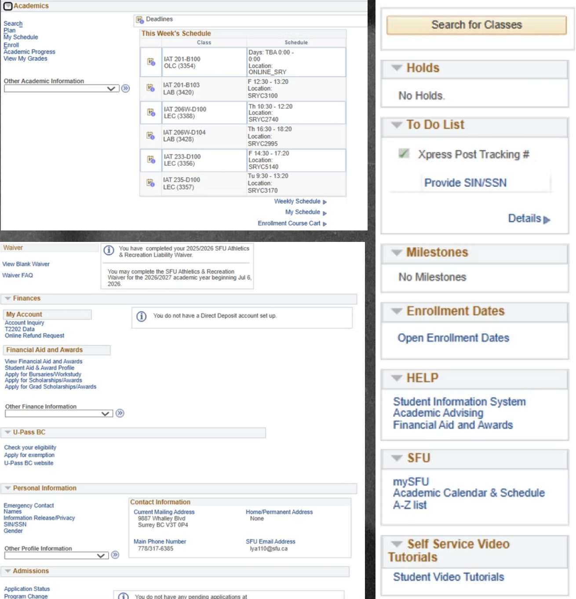
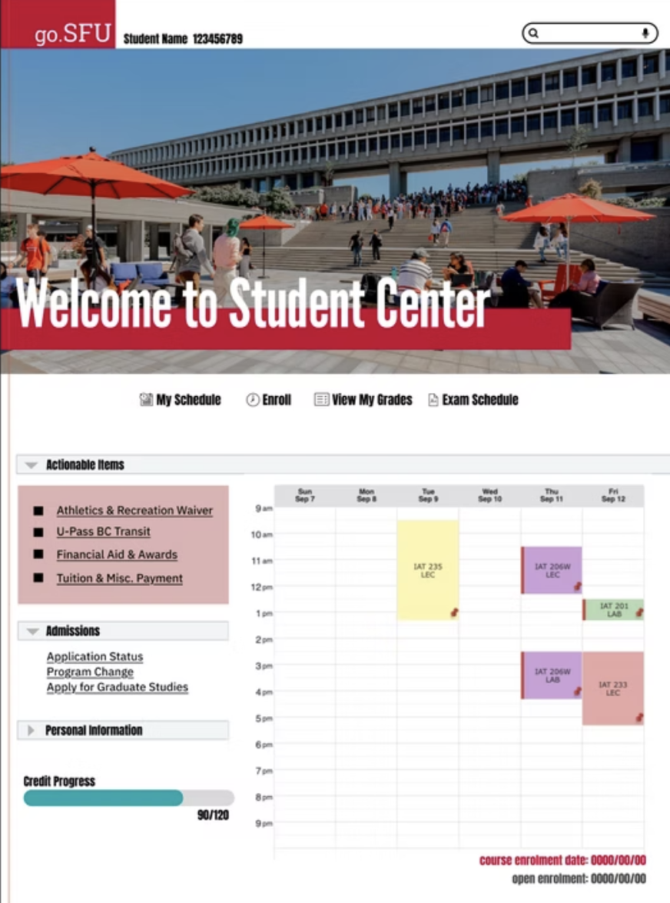
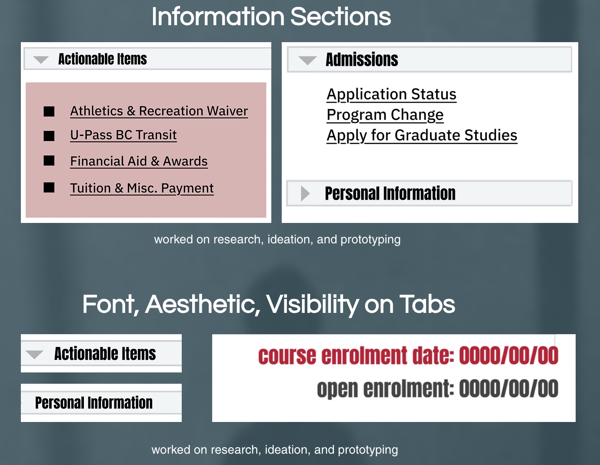

Project Context
This project aims to pin point the possible challenges users (in this case students) go through using the original website, utilizing memory, cognition, and testing to provide solutions in lessening stress, reducing information overload and allow first time users (mainly first year students) to easily navigate the site with or without guided tutorial.
- My Focus / Role:
- Decluttering the original website and collapsing information.
- Determine importance of information and usage frequency.
- Lessen stress on students during enrollment times and course selections.
- Prototype improved interface on Figma.
- Focus on simplicity, usability, and aesthetics.
- Universal accessibility regardless intelligence and language barriers.
What needed to be solved?
Students rely on portals to manage critical parts of their academic life, yet they are often met with cluttered, unintuitive systems that don’t align with how they think or prioritize tasks. In the context of fast-paced academic environments, this creates unnecessary stress, wasted time, and missed information.
Existing solutions focus heavily on functionality over experience, failing to consider human behavior, cognitive load, and personalization—resulting in tools that technically work, but don’t truly support students in navigating their daily decisions efficiently.
"Students don’t just need access to information—they need clear, intuitive, and personalized digital experiences that reduce cognitive overload and simplify decision-making."
Identified Pain Points
Friction points include overwhelming and disorganized information architecture, lack of prioritization, and a non-intuitive interface that doesn’t align with user mental models. This leads to stress, confusion, and inefficiency, especially during critical times like course registration or financial aid applications.
- Pain Point 1.
Too many features, tabs, and systems, with fragmented and overwhelming amounts of information. Users need a centralized, intuitive access to essential information. - Pain Point 2.
Poor usability and navigation frustration due to outdated, unintuitive, and hard to navigate portals. Struggles with simple tasks occur. Students expect modern, seamless digital experiences, but institutional systems lag behind. - Pain Point 3.
Lack of personalization leads to little engagement. Individual needs are not adapted and highlighted for relevant actions. User-centred interfaces needs to be included and personalized to prioritize user's needs.
How I approached it
Walk through your design or development process. What methods did you use? What decisions were made at each stage, and why?
Step 1
Research on user feedback with how frequently students need to interact with the collective information on original website.
Step 2
Re-arranging first, second and third priority items into collapsable sections to reduce information overload.
Step 3
Excluding unnecessary information pages that are not used. Sketching, wireframing, and exploring multiple directions.
Step 4
Group actionable items users need to or are recommended to complete such as waivers, application, and payments.
Step 5
Utilizing high contrast colours (red on white, black on white) for visibility on sections and important information (course enrollment).
Step 6
Students often forget where to find their specific course enrollment date and time + open enrollment, a dedicated highlight underneath course schedule helps as reminders.
Step 7
Consistent font choice, university colours (red, black, white) to keep branding and visual identity.
Design Artefacts



What made it difficult?
Describe the specific obstacles you encountered — technical, conceptual, time-based, or interpersonal. Be honest and reflective.
For each challenge, explain how you navigated or resolved it. This section demonstrates problem-solving ability and resilience to potential collaborators.
-
Applying HCI Principles & Human Psychology:
A major challenge was incorporating human-computer interaction principles and user psychology into the design—understanding how students think, process information, and make decisions to ensure the interface felt intuitive rather than overwhelming. -
Organizing Complex Information Architecture:
Another significant obstacle was determining how to structure large amounts of student data (courses, finances, services) in a way that is accessible to users regardless of their technical expertise. -
Balancing Simplicity with Feature Depth:
I had difficulty ensuring the interface remained clean and minimal while still accommodating all necessary features and functionalities.
What I took away
Good UX Is About Reducing Cognitive Load
I learned that effective design isn’t about adding more—it’s about prioritizing and simplifying information so users can act quickly and confidently.
Structure Is the Foundation of Good Design
A strong information hierarchy is crucial—without it, even visually appealing designs fail to function effectively.
User-Centered Design Drives Better Decisions
Designing from the perspective of a student helped me focus on real needs (speed, clarity, accessibility) rather than just aesthetics.